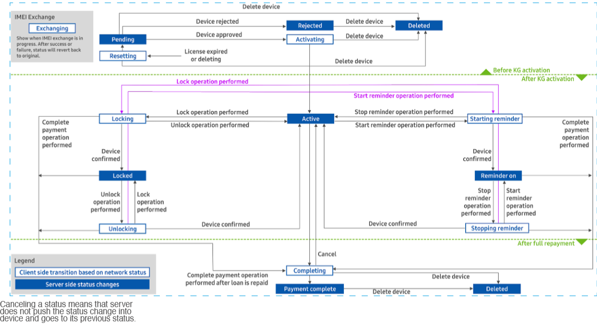

How Knox Guard works
Last updated April 30th, 2026
Once a device is added to the Knox Guard console, it can potentially go through a combination of states. The following image depicts an example of the typical status flow of a normal device before, during, and after Knox Guard activation.

For a detailed description of all the available statuses, see the Device status section.
Typical status flow
An example of a typical status flow for a device secured using the Knox Guard API is as follows:
-
The device is added to Knox Guard. You can:
- Ask a Samsung Knox device reseller to upload devices on your behalf.
- Add devices yourself using the Upload Devices endpoint.
-
Newly added devices start in the Pending state. You can accept a device upload using the Approve a Device endpoint. Once accepted, the device transitions to the Activating state.
-
Once the device boots up and connects to a network, Knox Guard activation automatically begins. During this process, a license is automatically assigned to the device.
Prior to activation, you must have a valid Knox Guard license. You can use the Add a License endpoint to link your purchased Knox Guard license keys to your account.
If activation successfully completes, the device’s status changes to Active and you can now manage the device. If you’re having trouble activating devices, see How to activate a device in Knox Guard.
-
When a device no longer needs to be secured by Knox Guard, you can mark it for completion using the Complete device management endpoint. The device’s status changes to Completing. You have two days to cancel this action and revert the device to the Active state using the Cancel completion endpoint, if necessary.
-
If no action is taken after two days, the device’s status changes to Complete and Knox Guard service ends on the device. You can no longer manage this device, but it remains in the device list until you manually remove it from the Knox Guard server using the Delete a Device endpoint.
If you need to perform device actions in bulk, such as approving, deleting, or completing management for multiple devices, you can use the corresponding Async endpoint, if available. Most Async endpoints support up to 10,000 devices at once.
Pay-as-you-go (PAYG) tenants
For Pay-as-you-go (PAYG) tenants, devices typically follow a slightly different status flow.
For Normal financing tenants, users typically pay to use a device. Devices begin in the Active state, and can be Locked if payments are overdue. In contrast, PAYG devices start in a Locked state. With the appropriate payment, the device become Active for a specified time period. After this period, the device is Locked again.
Currently, PAYG devices support all Knox Guard features except Offline device lock and Blinking reminder. In addition, some endpoints are available only to PAYG tenants. These include:
| Endpoint | Use this endpoint to |
|---|---|
| Send Relock Timestamp or update the lock message |
|
| Get device info by deviceId |
|
|
Device status
The device status may vary from the status displayed on the Knox Guard console. The following table lists the possible statuses of a device added to Knox Guard, and the corresponding status that displays on the external console.
status |
Description | External status (on console) |
|---|---|---|
| Pending | The device is uploaded to Knox Guard. Customers can view the device in the Knox Guard device list and either reject or accept it. | Pending |
| Rejected | The device was rejected. | Rejected |
| Activating | The device was accepted, but isn't active in Knox Guard yet. If your reseller preferences are configured to automatically accept device uploads, the device's state will automatically change from Pending to Activating. | Activating |
| Enrolled | The device is actively managed by Knox Guard and can be controlled. | Active |
| Exchanging | A temporary state that exists when an IMEI exchange is in process. This state requires Samsung customer support assistance and is for tracking purposes only. An Exchanging state can't occur when the device is locked. | Exchanging |
| Resetting | The device's associated Knox Guard license has expired or is deleted. Once this status is reported to the Knox Guard server, the device returns to the Pending state. | Resetting |
| StartingReminder | Blink reminders are activating on the device. | Starting Reminder |
| StoppingReminder | Blink reminders are stopping on the device. | Stopping Reminder |
| Blinked | Blink reminders are activated on the device. | Reminder On |
| Locking | The device is in the process of locking. | Locking |
| Locked | The device is locked. | Locked |
| Unlocking | The device is in the process of unlocking. | Unlocked |
| Completing | The device is in the process of completing management. Once complete, Knox Guard service ends on the device and it can no longer be controlled. | Completing |
| Completed | Knox Guard service has ended on the device. The Knox Guard client is deactivated, and the device can no longer be controlled. | Completed |
License state
Licenses also have states. You can view license information using the Get Licenses endpoint, or on the Licenses page of the Knox Guard console.
| State | Description |
|---|---|
| Registered | The license has been added to the account, but isn't active yet. |
| Active | The license is currently between the Activation start date and Activation end date and can be used in Knox Guard. |
| Expired | The Activation end date has passed and new devices can't be activated using the license. |
On this page
Is this page helpful?